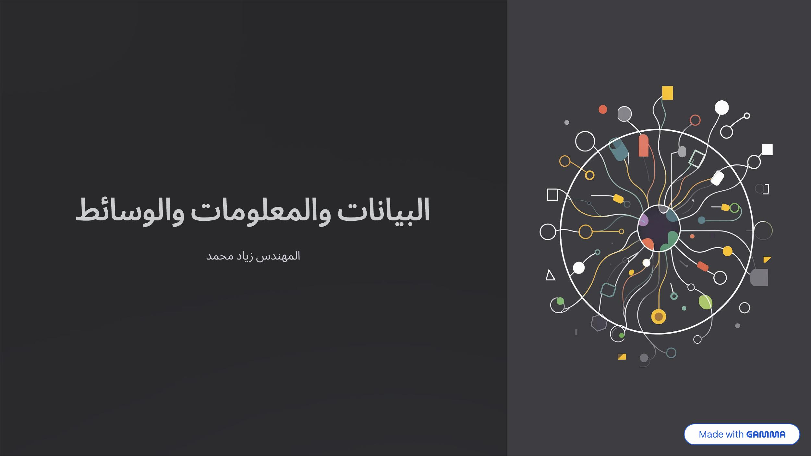
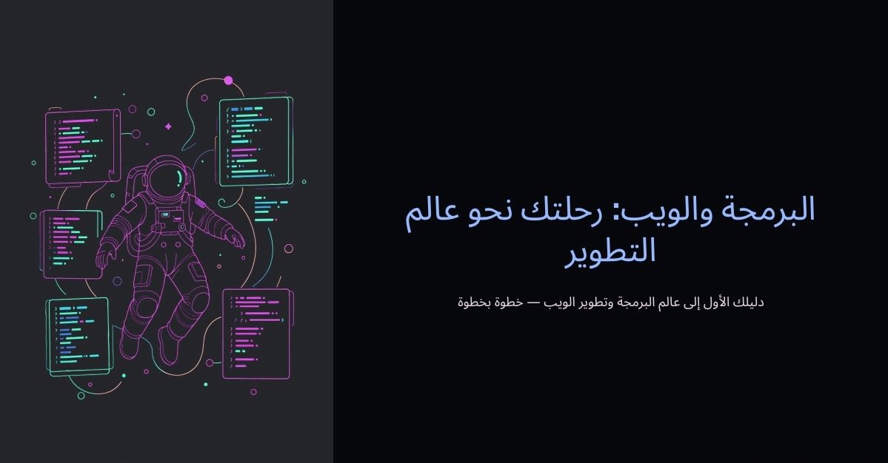
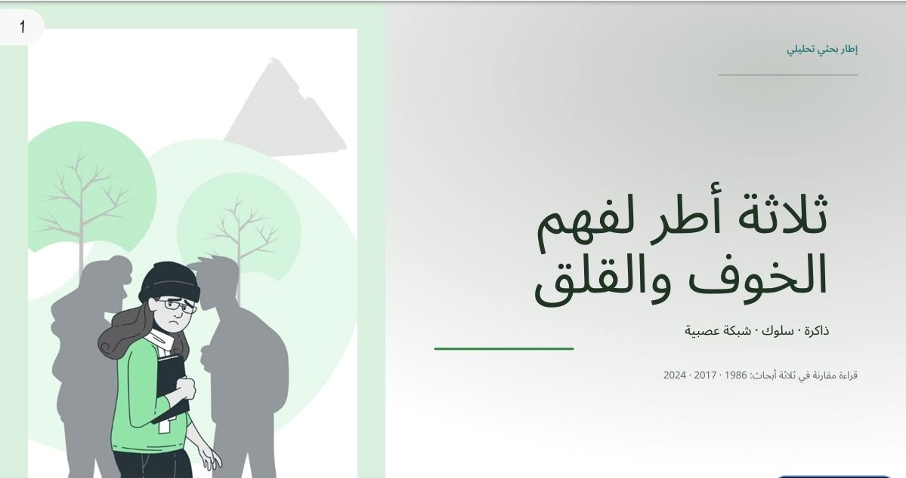

تصميم الدروس
تحويل محتوى الدرس الخام إلى ملف تعليمي منظم وسهل المتابعة.
نحول محتواك الخام إلى مواد تعليمية منظمة، جذابة، وجاهزة للاستخدام — بمساعدة الذكاء الاصطناعي ولمسة بشرية.
أنت تملك الخبرة والمحتوى. نحن نتولى تحويل المادة الخام إلى تجربة تعليمية مرتبة، واضحة، ومريحة للطالب.
خدمات مرنة حسب طبيعة المحتوى والنتيجة التي تحتاجها.
تحويل محتوى الدرس الخام إلى ملف تعليمي منظم وسهل المتابعة.
PDFs ومواد مراجعة مصممة بصريًا لتكون جاهزة للمشاركة مع الطلاب.
تحويل الأفكار إلى عرض مرتب يساعد المدرس على تقديم المحاضرة بسهولة.
إضافة أسئلة مراجعة وملخصات حسب احتياج الدرس والطلاب.
نماذج توضح كيف يمكن للمعلومة أن تتحول إلى تجربة تعليمية أفضل.

عرض تقديمي
عرض تقديمي
إطار بحثياسحب المؤشر لرؤية الفرق، أو استخدم أسهم لوحة المفاتيح بعد التركيز على المقبض.
البيانات حقائق خام مثل الأرقام والحروف والرموز
المعلومات بيانات تمت معالجتها فأصبح لها معنى
المعرفة استخدام المعلومات في الفهم واتخاذ القرار
التحقق المتبادل: قارن بين أكثر من مصدر قبل أن تصدق
أرسل المادة الخام والتعليمات التي تريدها.
نحول الأفكار إلى محتوى واضح ومتناسق بصريًا.
تراجع النسخة وتطلب التعديلات المطلوبة.
تحصل على الملف النهائي جاهزًا للشرح أو المشاركة.
سواء كنت تقدم دروسًا أونلاين، تدير أكاديمية، أو تبني كورسًا، نساعدك على تجهيز المحتوى بدون استنزاف وقتك في التنسيق.
أرسل لنا محتوى الدرس، وسنتواصل معك لتحديد الشكل المناسب والتفاصيل.
تواصل عبر WhatsApp